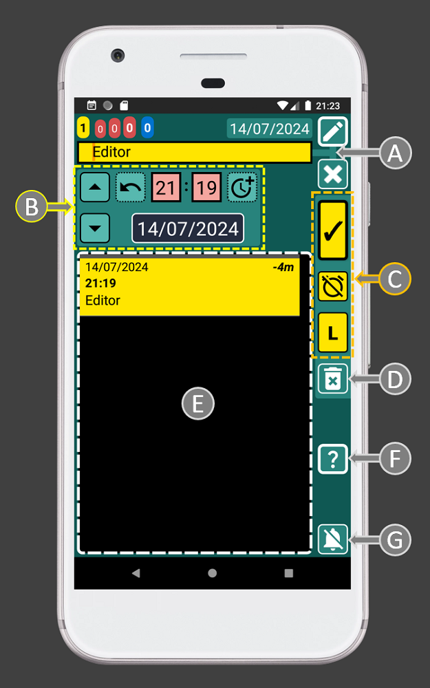
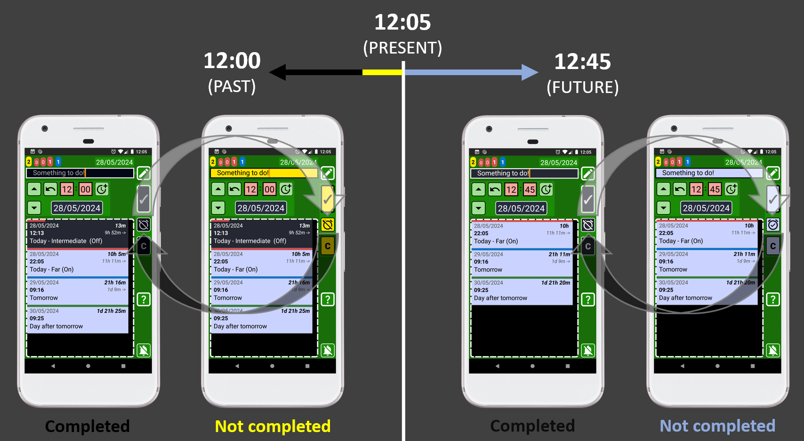
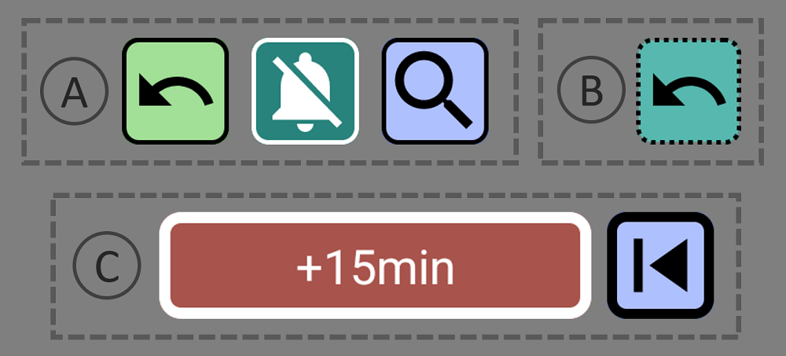

SECURElogBook is designed to be very easy to use, but familiarizing yourself with a few key rules will help you unlock its full potential:
1. SECURElogBook divides time into minutes and allows you to store information in each one, whether in the past or the future. In each of those minutes, you can create a record, task, hopping list or log an event. Everything will be stored in your timeline, then you can use the search system to search or group information to draw conclusion from it.

2. This digital timeline of your life can hold thousands of records without any problems. Having a large number of records in your list is not a problem for SECURElogBook. On the one hand, I created a solid technology that works even on very old phones. On the other hand, I created features that allow you to easily manage your records/time:
. By default, the list will focus on the present time or where you last saved a record without changing its time. So, you can keep pointing to a specific part of your list if you want to review the records on that area. This is useful when you realise that you have too many things to do in one particular day and you want to move records to other days to reduce your workload.
. If we create a record in the future or the past, the list position will not move.
. If you save a record and you want to find it quickly or make a change you can press this button on the main (blue) window. This button will allow you to open the last saved record.
. The date in the main window (with blue background) is a button that allows you to move the list to the yellow record closest to the present. If there are no yellow records, it will move the list to the present to show the next incoming record.
. Often, it’s faster to search for a record than to spend time scrolling through the list. The search system is easy and fast and it will help you to find what you are looking for.
Finally, there is a visual language that will make things even easier. That is why having a list with thousand of records is not a problem with SECURElogBook.
3. SECURElogBook is more than just another to-do list. It's a personal record keeper for your entire life. Everything from alarms and shopping lists to meals, workouts, ideas, … is stored as a single infinite list.
Think of it as a timeline where you can save things in the future (like alarms and reminders) and in the past (like what you ate or did). As time goes by, future events also become past records. All will be records in the digital timeline of your life, where you decide what to include.
This digital timeline of your life can be searched and analysed. You can find specific information, identify patterns, and gain insights about yourself using the search system. It's like having a personal assistant that helps you to remember everything, learn and grow.
SECURElogBook will make you feel better by providing a trusted and 100% private place to store your memories and information.
Finally, SECURElogBook will help you to save the most expensive thing we all have, time, in or out of work.
4. To manage the information, we basically have two windows. With SECURElogBook you don't need to delete anything. Alarms, food intake, workouts, ideas, shopping lists, ... one day, everything will become part of the past as records on your list. These records will be like our memories, but you can search or group them to draw conclusions from them. The main window (with blue background) allows you to do that:
A = Task counters are like radar that allow you to determine your workload at different times.
B = The date in the main window is a button that allows you to move the list to the yellow record closest to the present. If there are no yellow records, it will move the list to the present to show the next incoming record. Yellow logs are reminders/alarms that happened but you haven't reviewed yet.
C = Settings. Access to: security PIN, audio settings, date format, records delete system, import/export system and about window.
D = Help. Help documentation for this window.
E = App lock button.
F = List of records. Here you can find all your data. Tap on a record to edit it. The search results will also be displayed here.
G = Buttons to handle records: open last saved record, search and add record.
H = Stop alarm button.
Then we have windows to create and edit information. Our information/record is made from: text (A), time (B) and information about whether it is completed or not (C). That is why there are controls to help you to handle text (A), notice that are connected with a line. To help you manage time there is an area with controls dedicated to that (B). Finally, to handle the other things related to the record, we have the record buttons (C):

A = Text area where you can open your favourite menu to tap instead of typing. You can change the favorites menu according to your needs to make things even faster.
B = Time controls area.
C = Record buttons: save, completed/not completed, List/Copy. The List button will be displayed when we edit a record and we did not change its time. Then we can press the button to add the text to create a list. If we edit a record and we change its time, the “L” (list) button will change to “C” (copy). This will allow to create a copy of that record every time we set a different time and we press “C” button.
D = Delete current record.
E = List of records. Hold on a record to edit it. This list will help you to schedule records more easily.
F = Help. Help documentation for this window.
G = Stop alarm button.
The record buttons (C) are like a preview of how the record will look like. These buttons use conditional formatting to indicate, with colour, if the record is set in the future or in the past. Also, if the record is completed or not. It is like a traffic light, with a single light, that uses colour to let you know if the task/record is set in the future or in the past and if we completed it or not:
. Past:
Completed
. Future:
Completed

Thanks to this color system, it will be difficult to make mistakes since the colour will help you check if you are doing things right. For example, if you are setting an alarm to wake up tomorrow the record buttons must be blue, as that indicates that the record will be recorded in the future with an alarm. If the record buttons are not blue before saving the record, you have a problem as you are not creating a record with an alarm (blue record). Maybe you selected a date/time in the past or maybe you indicated that the alarm/record is completed.
The colour code system automatically makes less important records less visible while highlighting important ones:

. Dark = Completed records.
. Yellow = Missing records, that you must review as soon as possible.
. Blue = Future records.
5. You can press this button , on the main window (blue), to go back to the last saved/copied record.
6. Smart and intuitive user interface that reacts to your inputs to make everything easier and faster. Every button provides animation and vibration on interaction, confirming user input and reducing frustration from potential app unresponsiveness. The app uses a visual language to clearly communicate the function of each control, eliminating guesswork and boosting user confidence.
Text boxes have square corners:

Buttons have round corners:

If the button has a thin edge (A) the action of the button will happen in the same window. If the edge line is thick (C), that means that the button will open a new window. If the edge line of the button is not continuous (B), that means that button has a hold action.
7. The life of a reminder/alarm is always the same. It starts as a blue record (with alarm). Then when the alarm goes off the record will turn yellow. Now it will be added to the yellow counter as the task is not completed. Once we complete the task, by pressing the button (I), it will turn the task/record black. Now that data belongs to the past and you will be able to access to if using the search system.
8. The date in the main window (with blue background colour) is a button that allows you to move the list to the yellow record closest to the present. If there are no yellow records, it will move the list to the present to show the next incoming record.
9. Yellow records are shown in task counters, notification and app badge. Because they are very important. They should be checked at least once or twice a day.
10. SECURElogBook allows you to remember everything, because when you add a reminder/record (blue or yellow), it will be highlighted and you won't be able to accidentally delete it.
11. The small list with all the records (C) inside the creator (green) or editor (teal) windows will show only records that match or follow the moment selected by time (11:55) and date (14/07/2024) of the record we are editing (A).

This means that every time you change the time or date, the list (C) will be updated to show records that are set at that time or after.
Also, when you edit a record (teal window), the list with all records (C) will show the same record as the first item on the list (B). Because the first record (B) on the list has the same time that the record we are editing. This will allow you to edit the record while still being able to view the original information.
12. If you edit a list item, the small list with all the records will show the entire list:
13. When you create (green window) or edit a record (teal window) you can hold on any record inside the list to open and edit that record. That makes moving and scheduling tasks very easy.
If you are editing “Record A” (left picture) and you notice that you want to change something in “Record B”, you can open it by holding down on "Record B". After making the changes, you can then save it and come back to "Record A".
14. By default, the time for a new record (green window) is always set with the current time.
15. Every record dynamically shows the time gap between the current record and the present (on the right side, in bold), as well as the time difference between that record and the next (on the right side, marked with an arrow). Armed with this knowledge, scheduling your day becomes a piece of cake.
16. You can click the pop-up messages at the bottom of the window to close them.
17. To create multiple records quickly, it is faster to use the copy button than to create each record independently. That means it's faster to create the first record and hit the copy button. Then you can change the text and time and press the copy button. This will create multiple records without leaving the window. Additionally, this method will use the first record as a reference for the time.
18. How to remember everything? I use a reminder that pops up every 3 hours to ask me to add things. Every time the message goes off it makes me wonder if I'm missing something. Then if I missed something I can add it. Finally, I advance the reminder by adding 3 more hours with 3 simple taps on the screen üòâ
The more you add to the app the more it will be able to help you.
Next time you want to remember something you can try to remember it, or you can just use the app. With SECURElogBook, ideas in worries out!
19. Get ahead of the future! Yes, SECURElogBook will remind you everything but you should not be distracted while you are driving, studying, doing exercise or in a meeting.
You can use the red tasks counters on the top left to preview your workload. If the first red is 0 that means you have no alarms in the next hour. If the first and second red are both 0, that means you have 8h without alarms.

The task counters, on the top left corner of SECURElogBook, display the number of:
. Yellow = Missing records.
. Red (first) = Records in less than 1h (records with short red bar).
. Red (second) = Records after 1h and 8h. (records with half red bar).
. Red (third) = Total active records for today.
. Blue = Records for tomorrow.
It is possible to easily locate the records shown by the tasks counters:
. Yellow counter => Yellow records.
. Red counter (first) => Records with short red bar.
. Red counter (second) => Records with half red bar.
. Blue counter => Records with blue bar.
20. Repetitive reminders. Thanks to how SECURElogBook works, reminders and alarms are impossible to ignore because they cannot be accidentally deleted and are highlighted when activated. This means that you do not need to overload your list with records, since to access the next reminder, the previous reminder will always be activated first. At that point you can make a copy or move it with a few taps on the screen.
SECURElogBook allows you to manually create reminders/alarms that repeat every so often.
You can hold this button

Then you can create a copy of the record by pressing the button "C" (copy).
Congratulations, you are now a SECURElogBook advance user!
Remember, the more you add and the more you know about the app, the more it will help you!